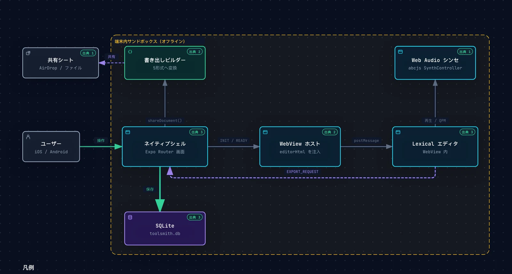

端末内 SQLite へ自動保存
編集が止まると SQLite へ保存。待ち時間は 400 / 800 / 1500 / 2500ms から選べ、保存状態はヘッダーに表示されます。
Expo / local-first markdown
TOOLSMITH EDITOR の編集体験を、iOS / Android へ。 リッチテキストで書き、Markdown で持ち出し、原稿は端末内の SQLite に自動保存します。 このページでは、実エディタをそのまま操作できます。
Phase 0〜1 相当の土台は実装済み。iOS / Android 実機での検証を進行中です。ストア配信は未定。
余計な選択肢を減らし、文章とアイデアをつなげるための軽量な編集環境。
Live demo
アプリに同梱しているエディタ HTML を iframe で読み込んでいます。 テキストの編集、ツールバーによる書式変更、ABC 楽譜の描画と再生を試せます。
Product tour
文書を選び、書き、保存の振る舞いを決める。モバイルで完結するための最小構成です。
Library
起動して最初に開くのは、文書のライブラリ。書くための入口を1画面にまとめました。
.md / .markdown / .txt を選び、新しい文書として保存します。余計な選択肢を減らし、文章とアイデアをつなげるための軽量な編集環境。
Editor
太字や見出し、リスト、チェックリスト、引用、表、リンク、コードブロックをリッチテキストで編集できます。
```abc ブロックを abcjs で描画し、再生・一時停止・停止・テンポ調整まで行えます。文書はこの端末内の SQLite にのみ保存されます。必要な文書は書き出しからバックアップしてください。
Settings
書き味に影響する設定だけを、シンプルな項目でまとめています。
Features
機能を増やすのではなく、書き始めてから書き出しまでの距離を短くしました。
編集が止まると SQLite へ保存。待ち時間は 400 / 800 / 1500 / 2500ms から選べ、保存状態はヘッダーに表示されます。
見出し、リスト、チェックリスト、引用、表、リンク、コードブロックをリッチテキストで編集。Markdown ソースもその場で確認できます。
```abc / ```music-abc ブロックを abcjs で描画。再生、一時停止、停止、テンポ調整までアプリ内で完結します。
Markdown / HTML / JSON / Quarto / Plain Text を OS の共有シートへ。AirDrop、メール、ファイルアプリから取り出せます。
DocumentPicker から .md / .markdown / .txt を読み込み、新しい文書として保存します。
エディタ本体と abcjs をアプリに同梱。原稿を外部サーバーへ送らず、ネットワークなしでも編集・保存・書き出しができます。表示フォントは端末のシステムフォントを使用します。
Architecture
アプリ全体を WebView で包むのではなく、画面遷移・保存・共有はネイティブ側が担当。 編集体験だけを WebView に閉じ込めています。
Expo Router のネイティブシェルが文書ライブラリ、エディタ画面、設定を持ち、 エディタは単一 HTML にビルドした Lexical アプリとして WebView 内で動作します。 画面遷移と保存はネイティブ、執筆と再生は WebView。責務を分けたまま、1つのアプリとして動きます。
図は Archify でコードベースの実装根拠をもとに生成しています。

タップして拡大 · Archify で生成Expo Router が画面遷移、SQLite CRUD、自動保存、共有シート、DocumentPicker を担当します。
単一 HTML のエディタを読み込み、INIT / READY / CONTENT_CHANGED をブリッジします。
リッチテキスト編集、Markdown 変換、abcjs による楽譜描画と Web Audio 再生を持ちます。
保存は直列化して取りこぼしを防ぎ、5形式を OS の共有シートへ渡します。
Getting started
セットアップはありません。起動したら、そのまま書けます。
ライブラリから「＋ 新しい文書」を選ぶか、既存の Markdown を読み込みます。初回は案内文つきの文書が用意されます。
横スクロールのツールバーで書式を変更。必要ならメニューからソースプレビューをオンにして、Markdown と ABC 楽譜を確認します。
編集内容は自動保存。共有シートから必要な形式を選び、AirDrop やファイルアプリへ書き出せます。
Your data
TOOLSMITH EDITOR EXPO は、クラウドサービスではありません。 文書はアプリ内の SQLite に保存され、アプリが内容を外部へ送信することはありません。
Status
開発中のプロジェクトです。CI と LP は公開済み、ストア配信・署名・EAS Build はこれから整えます。
Roadmap
実装済みの範囲と、これから検証する範囲を分けて公開しています。
モノレポ、Lexical エディタ、WebView ブリッジ、SQLite CRUD、5形式の書き出し、ネイティブ3画面。
iOS / Android の WebView 読み込み、ABC 音声再生、キーボード表示、大規模文書の保存性能を確認します。
EAS Build、署名、アプリアイコン / スプラッシュ、ストア向けスクリーンショットとプライバシー表記。
文書検索、タグ、一括バックアップ、書き出しテンプレートなど、文書が増えたときの導線を検討します。
FAQ
実装状況とスコープについて、現時点の回答をまとめました。
まだ配信していません。モバイル版の土台は実装済みで、現在は iOS / Android 実機での検証を進めています。ソースコードと開発メモは GitHub で公開しています。
文書は端末内の SQLite（アプリ専用領域）に保存されます。アカウントやクラウド同期はありません。アプリを削除するとデータも失われるため、必要な文書は共有シートから書き出してバックアップしてください。
Web版の Lexical エディタを単一 HTML として同梱し、Expo のネイティブシェルから WebView で読み込んでいます。保存先はブラウザのストレージではなく SQLite、書き出しは OS の共有シート、取り込みは DocumentPicker です。外部フォルダを直接編集する機能はモバイル版では再現していません。
YAML ヘッダー付きの .qmd 書き出しに対応しています。Quarto CLI によるレンダリングはスコープ外です。
はい。エディタ本体と abcjs をアプリに同梱しているため、ネットワークがなくても編集・保存・書き出しができます。表示フォントは端末のシステムフォントを使用します。
現在は cosmic（Sci-Fi）テーマ固定です。設定画面からソースプレビューの表示と自動保存の待ち時間を変更できます。テーマの追加は今後の検討項目です。
Expo SDK 58 / React Native 0.88 を前提に、iOS と Android を対象としています。実機検証が完了するまでは、動作保証や配信時期を確定していません。
TOOLSMITH EDITOR EXPO
ソースコードと開発メモを GitHub で公開しています。実装の詳細や検証項目は DEV-MEMO.md を参照してください。